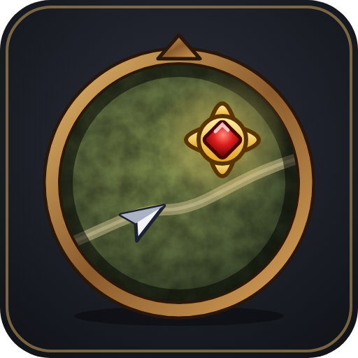

The game turns target tracking off again when you log in. The addon remembers your choice per character and sets it again after every loading screen.
Target is on by default · Focus Target once you tick it